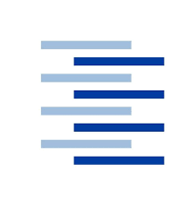

Консалтинг для малых и средних предприятий
Mag. Dr. Sabine Stolz, MSc
Понятные цифры, надёжное финансирование, подходящие ИТ‑решения.
Я сопровождаю малые и средние предприятия в вопросах контроллинга, финансирования, интернационализации и ИТ в сфере ERP – на короткий или длительный срок.
«Кто знает цель, тот найдёт свой путь!»
У Вас есть видение успеха Вашей компании? Не определён лишь путь к нему? Тогда обсудим его на ознакомительной беседе.

- 2005Независимый бизнес-консультант с
- 19Референций из бизнеса и сферы образования
- 5Направлений услуг
- Контроллинг и управление финансамиПланирование, управление, отчётность и экономическое развитие.
- ФинансированиеФинансирование, подобранное под Ваш проект.
- Интернационализация и сопровождение ростаПоддержка при решении международных задач, расширении бизнеса и организационном развитии.
- Консультирование по процессам и ИТ в сфере ERPСочетание экономических требований и практичных ИТ-решений.
- Внедрение, обучение и передача знанийВнедрение, семинары, лекции и преподавание – практико-ориентированно.
Коротко о себе
Mag. Dr. Sabine Stolz, MSc
Независимый бизнес-консультант с 2005 года. Ранее – должности в контроллинге и финансовом руководстве в VAE AG, AVL, ZAT и Ceram Catalysts, работа за рубежом: Россия, страны Балтии, Китай, США, Франция и Германия.
С 2018 года – сертифицированный преподаватель в сфере обучения молодёжи и взрослых. Языки: английский, французский, русский.
Референции
Избранные примеры сотрудничества
19 компаний и организаций, среди них AVL List GmbH, voestalpine AG, Universität Graz и FH Campus 02.





Ознакомительная беседа
Есть вопрос, который Вы хотели бы обсудить?
Кратко опишите Ваш запрос через форму или по электронной почте. На необязывающей ознакомительной беседе мы выясним, смогу ли я Вам помочь и каким образом.